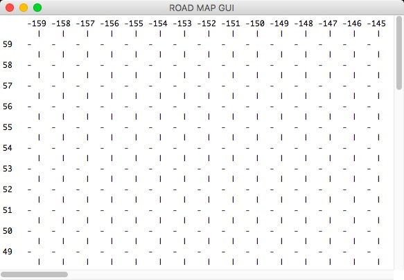

Travelling Salesman Problem
The purpose of this project is, solving complex problems with Python 3 programming language, implementing Python GUI (Graphical User Interface) programming with Tkinder package, writing tests (used pytest) and Test-Driven-Development (TDD) and considering different search algorithms and data structures.I
The output of the GitHub code will print the map above, its coordinates are ranging between 90 and -90 for latitude and -180 and 180 for logitudes. In the figure above, columns and rows show coordinates. The symbols "|" and "-" are printed to draw the grid of the map and the numbers betwen these symbols (1,2,3...) show the georgraphical positions of the cities.